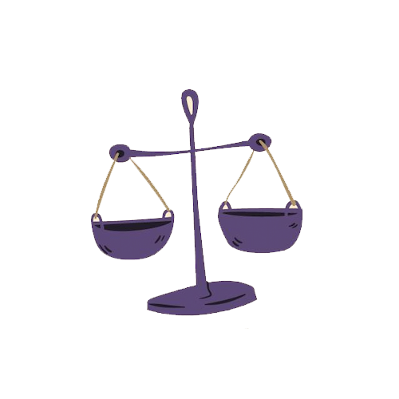

Magaskopet
Generelt
Vægten er et lufttegn og kendetegnes ved sin
stræben efter balance, harmoni og retfærdighed. Vægten er diplomatisk og besidder
en naturlig evne til at se tingene fra flere perspektiver, hvilket gør den til en
fremragende mægler i konfliktsituationer.
Som et socialt og ekstrovert tegn trives vægten bedst i relationer og samarbejder,
hvor der er en følelse af gensidig respekt og forståelse. Den værdsætter skønhed
og æstetik, og søger altid at skabe harmoni i sine omgivelser, både fysisk og
emotionelt.
Selvom vægten kan have svært ved at tage beslutninger, da den konstant vejer for
og imod, er den også kendt for sin retfærdighedssans og evne til at skabe fred.
Den stoler ofte på sin intuition til at navigere i komplekse sociale situationer
og finder glæde i at opretholde balancen i sine relationer.
Se også generelle studietips her
Studietips
Vægten er som sagt harmonisk, diplomatisk og trives
i balance. Når du studerer, er det vigtigt for dig at skabe et afbalanceret miljø.
Sørg for, at du har både arbejdsplads og afslapningsplads, så du kan skifte mellem
dem, når du føler behov.
For vægten er det også vigtigt at studere i et æstetisk tiltalende rum.
Prøv at dekorere dit studieområde med smukke ting – planter, kunstværker eller
stilfulde skriveartikler, der skaber en inspirerende atmosfære.
Studér gerne med en ven eller i en gruppe, hvor I kan dele idéer og skabe en
harmonisk dialog. Det sociale aspekt gør læringen mere fornøjelig og giver dig
den balance, du trives med.

Vægten
23. september - 22. oktober